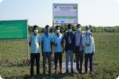
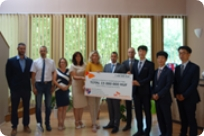

CSR Programs by global site
: 2 Corporate-wide + 1 Region-specific
To share a management culture of mutual growth in overseas business sites and share it with local communities, to expand social contribution in overseas business sites is set as a core task of the GROWTH strategy. The main goal of the core task is to establish a CSR promotion system in consideration of the characteristics of each country and the needs of local communities, and to develop effective implementation models through continuous communication with the local communities.
The establishment of the global CSR promotion system applies SK innovation's philosophy on social contributions and strategies to overseas business sites, and it is expected to become a foundation for accelerating our ESG management practices. Through this, overseas business sites will strive to fulfill their role as a member of local communities and, at the same time, create an amicable management environment for mutual growth.
CSR programs by SK innovation’s global sites
-
 COVID-19 support to local medical centers and hospitals in Georgia, the US
COVID-19 support to local medical centers and hospitals in Georgia, the US
-
 Plogging activity by employees of Shanghai business site in China
Plogging activity by employees of Shanghai business site in China
-  Mangrove reforestation project in Myanmar
-
 Supporting social companies in Lima, Peru
Supporting social companies in Lima, Peru
-
 Sponsoring the Spisak Music Competition in Poland
Sponsoring the Spisak Music Competition in Poland
-  Donation to the local public foundations in Ivancsa, Hungary